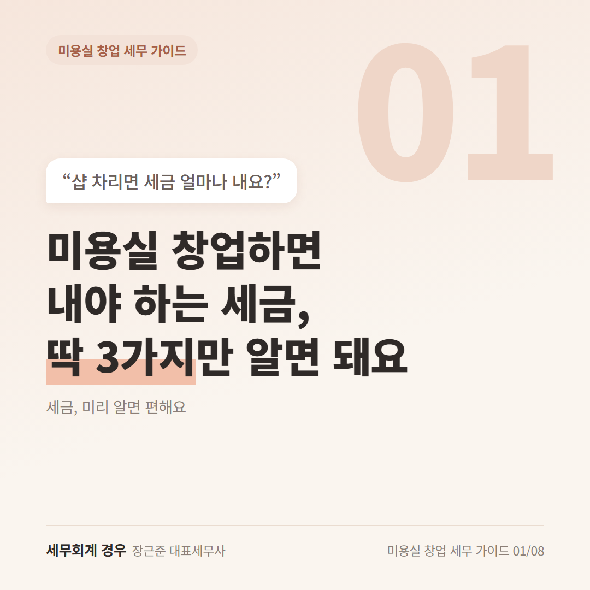
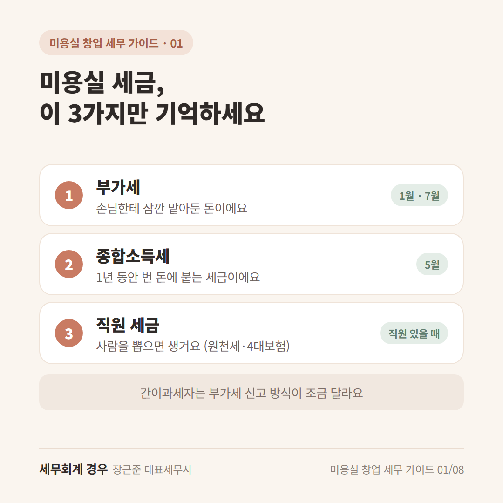
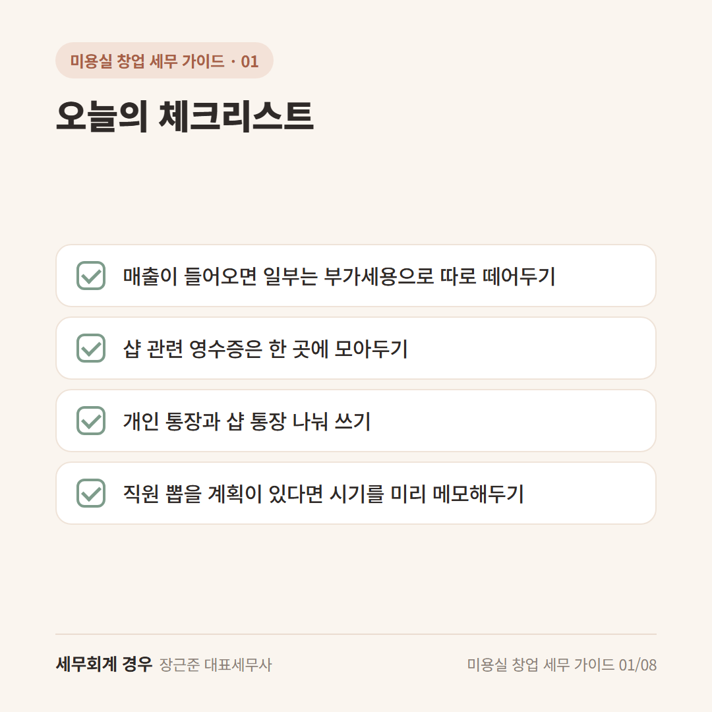

미용실 창업 세무 가이드 · 1번째 글
미용실 창업하면 내야 하는 세금, 딱 3가지만 알면 돼요

샵 자리 알아보고, 인테리어 견적도 받아보셨죠?
그러다 문득 "내 샵 차리면 세금은 뭘 내야 하지?" 하는 생각이 드셨을 거예요.
디자이너로 일할 땐 월급에서 알아서 떼어가서 신경 쓸 일이 별로 없었잖아요.
미용실 창업 세금, 막막해 보여도 처음엔 딱 3가지만 알면 돼요.
1. 부가세: 손님한테 잠깐 맡아둔 돈이에요
커트비, 펌 비용 안에는 부가세가 조금 들어 있어요.
이 돈은 원장님 돈이 아니라, 손님한테 잠깐 맡아뒀다가 나라에 전해주는 돈이에요.
그래서 통장에 들어온 매출을 전부 내 돈으로 생각하면 신고할 때 당황할 수 있어요.
매출이 들어올 때마다 조금씩 따로 떼어두면 마음이 편해요.
반대로 샵 물건을 살 때 낸 부가세는 돌려받을 수도 있어요.
이 이야기는 인테리어 편에서 자세히 알려드릴게요.
(간이과세자는 방식이 조금 달라요. 간이과세자 편에서 따로 정리했어요.)
2. 종합소득세: 1년 동안 번 돈에 붙는 세금이에요
1년 동안 번 돈에서 쓴 돈(월세, 재료비, 인건비 같은 것)을 빼고, 남은 돈에 붙는 세금이에요.
다음 해 5월에 한 번 신고해요.
여기서 중요한 건 "쓴 돈"을 보여줄 수 있어야 한다는 거예요.
영수증을 잘 챙겨두면 그만큼 세금이 정확하게 계산돼요.
3. 직원 세금: 사람을 뽑으면 생겨요
혼자 운영할 땐 신경 쓰지 않아도 돼요.
디자이너나 스태프를 뽑으면, 돈을 줄 때 세금을 조금 떼어 대신 내주는 일이 생겨요.
이걸 원천세(급여에서 미리 떼어 대신 내는 세금)라고 해요.
4대보험도 같이 챙겨야 하는데, 이건 직원 뽑을 때 편에서 쉽게 정리할게요.

오늘의 체크리스트

- 매출이 들어오면 일부는 부가세용으로 따로 떼어두기
- 샵 관련 영수증은 한 곳에 모아두기
- 개인 통장과 샵 통장 나눠 쓰기
- 직원 뽑을 계획이 있다면 시기를 미리 메모해두기
자주 묻는 질문
첫해에 매출이 적으면 세금이 거의 없나요?
매출과 쓴 돈에 따라 달라요. 세금이 적게 나오더라도 신고는 꼭 해두시는 게 좋아요.
지방소득세는 따로 챙겨야 하나요?
종합소득세를 신고할 때 함께 붙어 나와요. 같이 챙기시면 돼요.
마무리
미용실 창업 세금, 부가세·종합소득세·직원 세금 이 3가지만 기억하시면 돼요.
처음부터 다 알 필요는 없어요.
내 샵은 뭘 준비하면 되는지, 창업 전에 한 번 편하게 물어보세요.
개인 상황에 따라 달라질 수 있으니 자세한 내용은 상담으로 확인하세요.